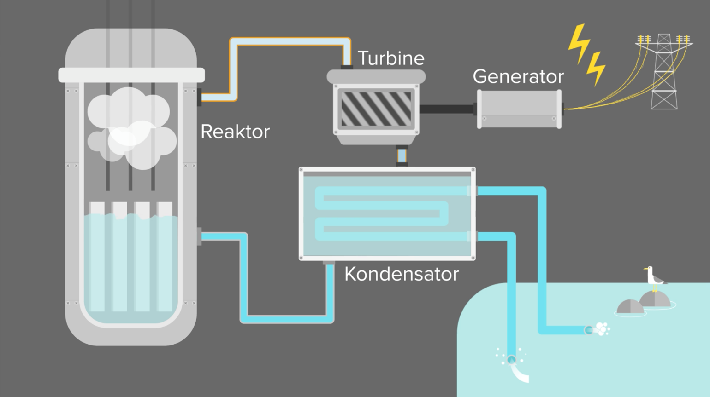

Kerneenergi typisk os kendt som atomkræft. Det er en vedvarende energikilde som ikke udleder noget CO2 under produktionen af strøm.
Det fungerer ved at danne termisk energi, som derefter bliver omdannet til kinetisk energi, som til sidst dannes til elektricitet.
I Danmark har folketinget besluttet at Danmark ikke skal have atomkræft som en del af det fremtidig el-netværk. Dette er baseret på baggrund af de få, men skræmmende episoder som har involveret atomkræftværker. Et eksempel er atomkræftværket ved Chernobyl i Ukraine, hvor der skete en kæmpe katastrofe, som forsaget store mængder af radioaktive skader, i form af radioaktivt nedfald som blev spredt ud over en stor del af verdens kontinenter.
Dog til trods for de kontroversielle episoder som der har været igennem tiden, så er atomkræftværk stadigvæk en god mulighed for at kunne lave enorme mængder af vedvarende energi på meget lidt plads.
Det fungerer ved at man opvarmer vand (termisk energi) som derefter skaber vanddamp (kinetisk energi). Dampen bliver ført ind i en turbine, som kan bruge det til at skabe strøm (elektricitet). Hele processen sker ved at bruge uran til at opvarme vandet med, som skaber den nødvendige mængder af damp for at kunne lave strøm. Samtidigt så bruger man os havvand til at nedkøle reaktoren med, for at sørge for den ikke overopheder.
Der er mange gode sider ved atomkræft, men en af de allerstørste problemer er dets affald. Når den uran man har brugt ikke længere kan bruges til i kræftværket, så skal det afskaffes.
Men afskaffelsesmetoden er ikke nem, da det skal ske på en hensigtsmæssig måde, så hverken mennesker, dyr, eller miljø tager skade. NRGI beskriver følgende hvordan man afskaffer det, men os genbruger det.
”Typisk håndtere man affaldet ved at deponere det dybt nede i jorden og indkapsle det i beton, så strålingen ikke kan slippe ud. I næste generation af atomværker bliver det imidlertid muligt at genanvende atomaffaldet som brændstof, ligesom man arbejder på at udvikle nye reaktorer der, der danner indre farligt affald.” (NRGI, u.d.)